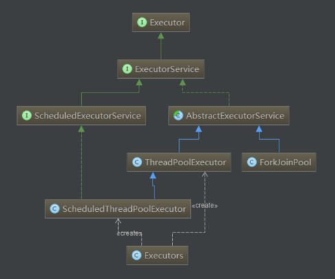

Java线程及线程池
1. Java 线程池
1.1 java 线程池框架的主要类和接口

- Executor 接口定义了执行器 Runnable 执行方式
- ExecutorService 定义了线程具体接口
- ScheduledExecutorService 定义了定时执行线程的接口
- AbstractExecutorService 线程池的实现的抽象类
- ThreadPoolExecutor 线程池的具体实现类
- ScheduledThreadPoolExecutor 定时线程池的实现类
- Executors 线程池的辅助工具类
1.2 Executors 辅助类主要几种线程池模型
newCachedThreadPool可缓存的无界线程池, 当一个新请求到来时, 如果没有缓存线程则新建一条线程来处理. 如果有则用缓存线程. 处理完成后, 空闲线程会被缓存, 如果超时前没有被用来处理请求, 则该线程会被回收. 这个模型的线程池是Integer.MAX_VALUE可以看作是无限大小的newFixedThreadPool固定大小的线程池, 对于没有线程处理的请求会在LinkedBlockingQueue中等待处理newSingleThreadExecutor单一线程的线程池, 请求会被按队列顺序处理newScheduledThreadPool固定大小 …